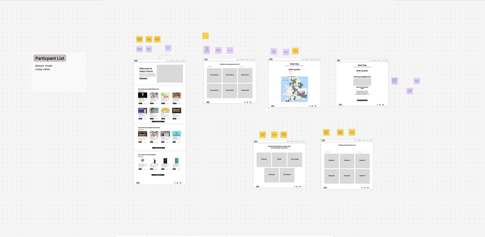
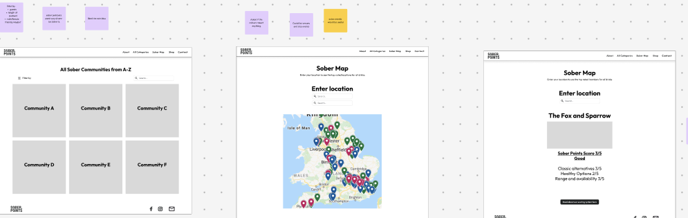
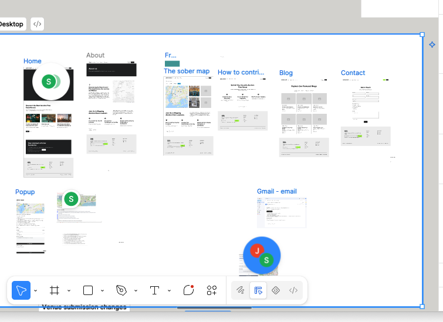
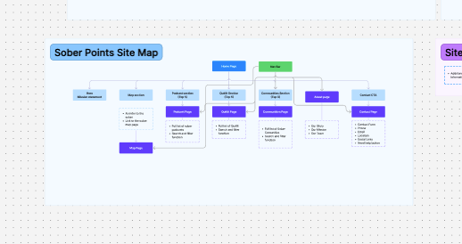

Websites that make it easy for clients to trust you and get in touch.
I help businesses find the friction points quietly costing them enquiries, and fix them with a focused review rather than a full rebuild.
See how this approach reshaped Swansea Women's Aid's site → now live at swanseawomensaid.com
Three ways to work together
Most business websites aren't badly designed; they're just never properly looked at. A focused review usually finds more, faster, than a full redesign.
Website Quick-Fix Review
A focused look at one page or journey: your homepage, or the path from "interested" to "enquiry." You'll get five concrete, prioritised fixes you can hand straight to whoever maintains your site.
Book now for £175Need it faster? Express (2hr, submit by 12pm):
Book Express for £250Full UX Audit
A structured review of your whole site: navigation, content clarity, mobile experience, accessibility basics, and how easily a visitor turns into an enquiry. Delivered as a written report plus a 30-minute walkthrough call.
Ongoing Consulting
An outside eye on an ongoing basis: reviewing new pages before they go live, sense-checking a redesign brief, or advising your marketing team.
Start with a Discovery Call
A focused 30-minute conversation about what's going on with your site, before you commit to anything. £50, non-refundable, but fully deducted from your Full UX Audit or Consulting booking if you go ahead afterwards.
Book a discovery call for £50Your website is doing more work than you think
For a law firm, a website isn't a brochure. It's often the first, and only, impression a stressed, time-pressured client gets before deciding whether to pick up the phone. Confusing navigation or a buried contact form doesn't just look dated: it costs enquiries you never hear about, because the person just leaves.
The same is true for most service businesses. A short review is usually enough to find where that's happening on your site.
Research for the Swansea Women's Aid project surfaced a recurring pattern: visitors often weren't sure whether what they were experiencing counted as abuse, or what support was actually available. That gap reshaped the entire homepage around getting people to the right information faster. Insight from the Swansea Women's Aid research phase
Swansea Women's Aid: a research-led redesign
A full website redesign for a local domestic abuse charity, built around three different audiences with very different needs, and very different amounts of time to find what they're looking for.


The brief
Swansea Women's Aid needed a site that worked harder for three audiences at once: women seeking help, often in a moment of crisis; donors and funders; and people looking to volunteer. Staff also needed to be able to post news and updates themselves, without relying on a developer.
The research
I ran a stakeholder interview with the charity's team to understand their goals, then carried out user research (including interviews I commissioned through an external research partner) to understand real barriers. I also benchmarked the experience against Refuge's national site to see how a well-resourced organisation in the same space structured crisis messaging and support pathways.
The redesign
Navigation was rebuilt around the three priority audiences, with crisis support first. A visible "quick exit" safety feature was made prominent rather than buried, and a plain-language section on recognising abuse was added to reduce confusion. Staff login moved to the footer to keep the main site focused on visitors, sitting on top of a lightweight CMS so the team could publish news and events without developer help.
The outcome
The research and redesign fed directly into the charity's production site, live today at swanseawomensaid.com, structured around what someone actually needs in the moment they land on it: support first, then ways to give or get involved.
Key research findings that shaped the design
- Many women weren't sure whether what they were experiencing qualified as domestic abuse, or what services were available to them.
- The existing site's content was hard to navigate and lacked a clear structure for different visitors.
- Staff had no easy way to update news, services or events without developer support.
Sober Points: designing a better way to find sober-friendly places
Product design · UX research · Interaction design · Prototyping · Usability testing · Product analytics
Sober Points is a discovery platform designed to help people find places where choosing not to drink doesn't mean compromising on the experience. I founded Sober Points after recognising a gap in traditional venue discovery: a restaurant, pub or bar might technically offer an alcohol-free option, but that doesn't necessarily make it a good experience for someone who isn't drinking. I led the product and UX design from early research and concept development through to the live web platform and native app.
The problem
Finding somewhere to eat or socialise is easy. Finding somewhere that's genuinely good when you're not drinking is harder. Information about alcohol-free options is often incomplete, buried within menus or unavailable until you arrive. Existing discovery platforms weren't designed around this need.
The initial question was: how might we make it easier for people to discover places where they can have a genuinely good experience without alcohol? But I deliberately didn't jump straight to a venue-finding app. Early Sober Points concepts explored a much broader ecosystem around sober living, including communities, podcasts, events, products and places.

Starting with users
I carried out user research to understand how people currently discovered sober-friendly experiences, what information they needed and where existing services fell short. Rather than testing a predetermined solution, I used early concepts to explore which parts of the proposition were most useful and how people expected the service to work. Research informed both the content of the service and its structure, and helped me progressively narrow what was initially a very broad proposition.
Exploring the proposition
Early wireframes explored several potential areas of the service, including sober communities, curated content, podcasts, products, events and a location-based map. The map was present from an early stage, allowing users to enter a location and explore sober-friendly options nearby.

These weren't intended as polished interfaces. They gave me a quick way to test the structure and value of different parts of the proposition before investing in detailed design and development.
Mapping the wider experience
As the concept developed, I mapped the wider service rather than designing individual screens in isolation.


The architecture covered the homepage, Sober Map, contribution journeys, content, contact and supporting communications. This helped me think beyond individual screens and consider how someone might move from discovering Sober Points to finding somewhere suitable, and how the community could contribute information back into the platform.
Making venue discovery the core experience
Through research, prototyping and iteration, Sober Points evolved from the broader content and community concept into a much more focused proposition: help me find somewhere good to go when I'm not drinking.
Venue discovery became the core of the experience, which meant designing around a different set of questions: what's near me? Is it suitable for the kind of place I'm looking for? What alcohol-free options does it actually have? Can I trust the information? The product therefore needed to do more than put pins on a map.
Designing for quick decisions
I designed the map and venue experience to progressively reveal information rather than making users investigate every venue individually. Users can search by location, move between map and venue results, apply filters and open individual venue profiles for more detail. Venue information can include imagery, alcohol-free options, attributes and community reviews, giving people more context before deciding where to go.
Find options around a destination.
Reduce the number of unsuitable venues before opening individual profiles.
Surface information relevant to someone choosing not to drink.
Designing a two-sided service
One of the challenges was that Sober Points wasn't simply a consumer interface: the usefulness of the product depends on the quality of the venue information behind it. I therefore designed contribution and moderation journeys alongside the discovery experience, allowing information to be added and updated while maintaining control over what appeared publicly. Venue owners can also claim their listings, creating a route towards more accurate, owner-verified information.
Shipping, measuring and learning
Launching the product wasn't the end of the design process. I instrumented the live experience with product analytics so I could understand how people were actually using Sober Points rather than relying solely on what people said during research, tracking behaviour across discovery, search, venue interactions and engagement with key functionality. Because this is commercially sensitive product data, I don't publish the underlying figures, but behavioural patterns help me identify where users are engaging, where journeys may be creating friction and what to investigate next.
How people enter and explore the service.
Which venue information and functionality they engage with.
Where behaviour suggests a journey needs investigation.
Use behavioural evidence alongside qualitative research to prioritise improvements.
Iterating after launch
Real usage has continued to expose design problems that weren't obvious in the original interface. For example, venue types and venue attributes don't always belong at the same level: a restaurant, pub or shop describes what a place is, while something such as alcohol-free beer on draught describes what it offers. As the dataset and functionality grew, treating both as equivalent filters risked creating a confusing information hierarchy.
This is a relatively small interface change, but it illustrates an important part of my approach: the information architecture has to evolve as the product and its data become more complex.
From web product to native app
As Sober Points developed, I also translated the experience into a native mobile application. This wasn't simply a visual port of the website: mobile introduced different interaction considerations around map behaviour, navigation, authentication, saved venues and returning to the app through deep links.
The outcome
Sober Points progressed from exploratory wireframes and user research into a live product containing hundreds of sober-friendly venues, with real users searching, discovering and interacting with venue information. More importantly for me as a designer, it created an ongoing feedback loop: research → design → build → measure → learn → iterate. Building my own product has meant working beyond the boundaries of a conventional design handoff. I've had to make decisions about user needs, technical constraints, data quality, moderation, analytics and commercial viability, and then see how those decisions perform with real users.
What I learned
The biggest lesson has been that good product design doesn't end when an interface is shipped. Some of the most useful design questions have appeared after launch, once the service contained more venues, more data and more functionality than the original prototypes ever had to accommodate. Sober Points continues to evolve, but the principle behind it has remained remarkably simple: make it easier to find somewhere you'll genuinely enjoy going, whether you're drinking alcohol or not.
About
I'm Sara, a UX designer based in Swansea.
I focus on accessible, research-led websites, including a full redesign for Swansea Women's Aid, grounded in stakeholder interviews and user research I commissioned myself.
I now work with local businesses who want their website to build trust and win more enquiries, without the overhead of a full agency engagement. I keep projects small and focused on purpose. A short, sharp review is often worth more than a ground-up redesign.
Let's take a look at your site
If you're not sure where to start, the Website Quick-Fix Review is the easiest way in: 2 working days, one clear set of fixes, no commitment beyond that.